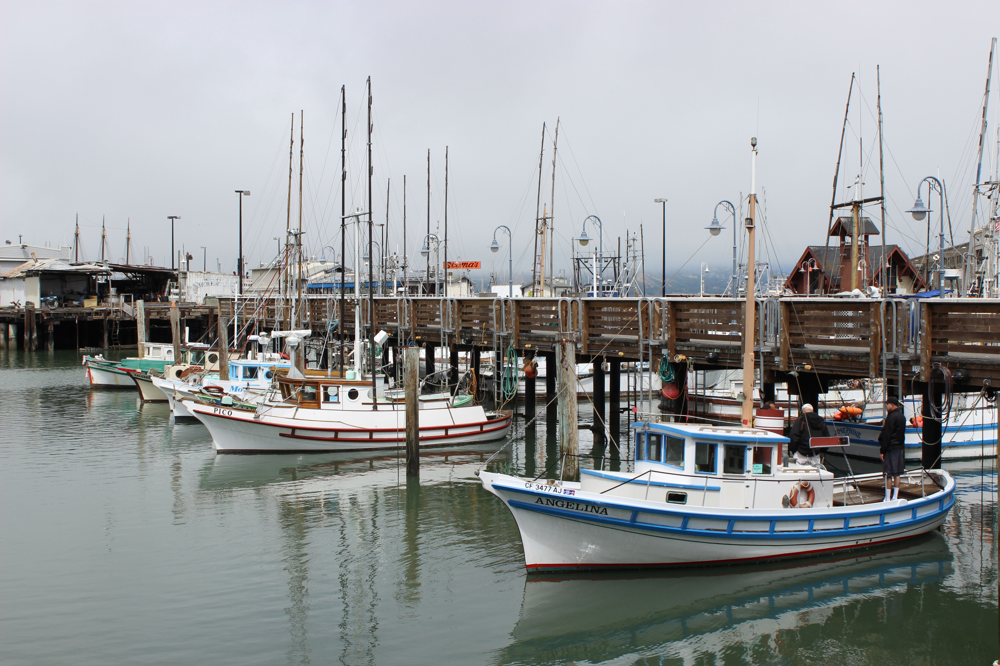

Explore Morehead City

Morehead City, North Carolina, offers
different activities for visitors who
enjoy exploring new places and trying
new experiences. Whether you enjoy
outdoor adventures or prefer learning
about local history and culture, there
are plenty of things to discover.
From spending time near the water
to visiting museums and exploring
local attractions, Morehead City
has activities for families,
friends, and travelers of all ages.
Outdoor Activities
Morehead City Waterfront
The Morehead City waterfront is
a great place to walk around,
enjoy views of the water, and
explore nearby shops and
restaurants. Visitors can also
watch boats coming and going
along the waterfront.
This is a relaxing activity for
visitors who want to experience
the coastal atmosphere without
planning a full-day adventure.
Fishing and Boating
Fishing and boating are popular
activities around Morehead City.
Visitors can enjoy time on the
water, take a fishing trip,
or explore the surrounding
coastal scenery by boat.
Before planning a trip, visitors
should check the weather and
review any necessary boating
or fishing requirements.
North Carolina Seafood Festival
The North Carolina Seafood Festival
is an annual event in Morehead City
that celebrates the area's seafood
and coastal traditions. Visitors
can enjoy food, entertainment,
and activities during the festival.
The festival is a fun opportunity
to experience local culture
and learn more about the
community's connection to seafood.
More Outdoor Adventures
Atlantic Beach
Atlantic Beach is located near
Morehead City and is a popular
destination for visitors who
enjoy spending time by the ocean.
Visitors can relax on the sand,
walk along the shoreline,
or enjoy swimming when conditions
are safe.
Fort Macon State Park
Fort Macon State Park is located
near Atlantic Beach and offers
opportunities to explore coastal
history and outdoor scenery.
Visitors can tour the historic
fort, enjoy nature trails,
and learn about the area's past.
Indoor Activities
North Carolina Maritime Museum
Located in nearby Beaufort,
the North Carolina Maritime
Museum is a place where visitors
can learn about coastal history,
boats, and the maritime culture
of North Carolina.
The museum is a good option
for visitors who enjoy history
or want an indoor activity
during their trip.
Shopping and Local Stores
Visitors can explore local
stores and shops around
Morehead City. Shopping is
another way to experience
the area and discover
souvenirs and local products.
It can also be a convenient
activity when visitors want
a break from spending time
outdoors.
Helpful Tips for Planning Activities
Before heading out to explore
Morehead City, here are a few
things to keep in mind:
-
Check the weather before
planning outdoor activities.
-
Bring sunscreen, water,
and comfortable shoes.
-
Check attraction hours
before visiting.
-
Plan ahead for festivals
and popular seasonal events.
-
Follow safety guidelines
when swimming, fishing,
or boating.
-
Allow extra travel time
when visiting nearby beaches
during busy weekends.
Plan Your Adventure
Whether you want to spend the day
outside or explore indoor attractions,
Morehead City and the surrounding
Crystal Coast offer many ways
to enjoy your visit.
After exploring, check out the
Dining page
to discover places to eat.